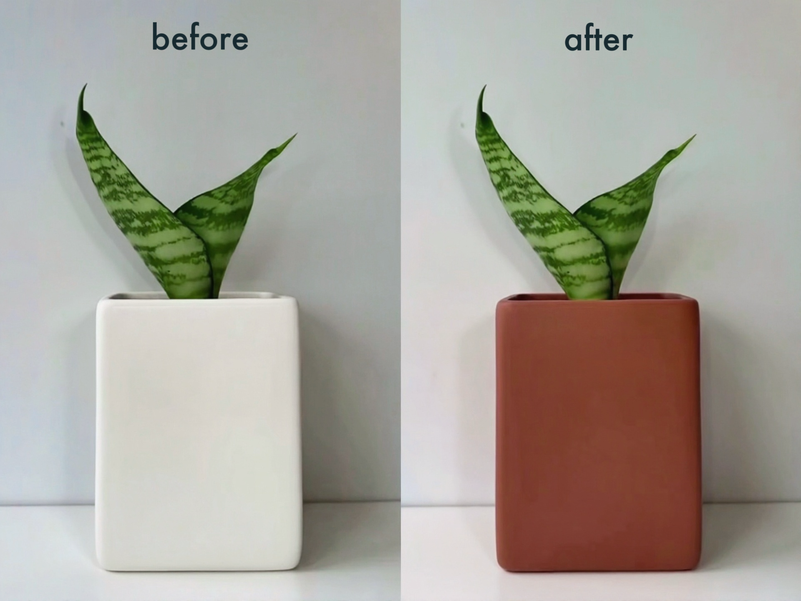

Hydrochromic Interactive Planter

Background
This project focuses on the difficulty novice plant caretakers face in judging soil moisture conditions. It explores how material-based visual feedback can make invisible environmental states more perceivable.
Problem
For beginners, it is often hard to determine whether a plant has been sufficiently watered. Soil moisture is not directly visible, which leads to uncertainty and improper plant care.
Approach
This project proposes a ceramic planter coated with hydrochromic material that changes color in response to moisture. By visualizing soil conditions directly on the surface of the object, users can more intuitively understand when and how much to water their plants.